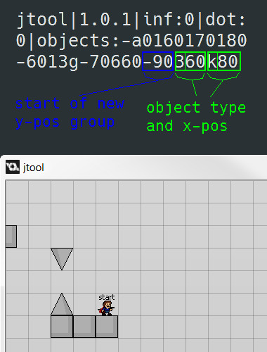

Map file format
I designed the map file format to be small, version-friendly, and ascii-only so that maps could be shared via copy-pasting text. The overall format is shown in the example map in the picture. The format should be pretty straightforward, except for the objects section which is explained in the sections below.
Grouping by Y posiition
For each map object, we need to save a type, x-position, and y-position. Instead of just saving the type, x, and y of each object sequentially, I applied a slight optimization. Objects with the same y position are grouped together with a header telling what that y-position was, so that same y-position doesn't need to be repeated for every object.
How numbers are represented
A dash character signifies the start of one of these y-position groups. The two characters following the dash are the y position in base32. Since the y-position will have a range of less than 1024, we can store it in two base32 characters, which is 10 bits. All sequences of 3 characters after this header and before the next dash are the object ids (1 character, 5 bits) and its x-positions (2 characters, 10 bits). I chose to group by y-position rather than x-position because there would be as fewer groups on the average map.
Offsetting for negative positions
In order to save objects with negative x or y positions, the x and y positions are incremented by 128 when saving (and of course decremented by 128 when loading). The screen width is 800 pixels, and we have 1024 possible values we can save, so this allows for more than enough leeway for objects to the left and right of the screen. I did this because it's nice to be able to save objects slightly off the edge of the screen, like the block shown in the picture.
